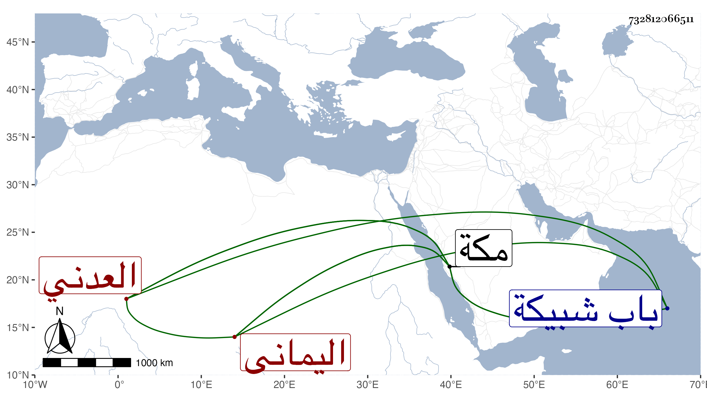

0902Sakhawi.DawLamic.ITO20230111-ara1.EIS1600.732812066511
Biography ID: 732812066511
456
عمر العدني اليماني نزيل مكة ويعرف بالمسلي بفتح الميم ثم مهملة ساكنة ثم بعدها لام .شيخ صالح عابد معتقد منفرد عن الناس فرد في كثرة العبادة والزهد بحيث كان يشبه بعباد بني إسرائيل وكان يغتسل لكل صلاة . مات بمكة في ربيع الأول سنة خمس وستين ودفن بمقابر باب شبيكة وهو ابن أبي بكر بن أحمد رحمه الله وإيانا . أرخه ابن فهد .
